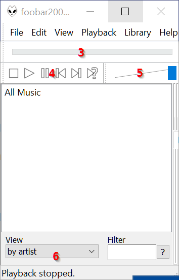

7. Software¶
| Author: | MUHAMMAD TARMIZI BIN KAMARUDDIN / mtbink.com / @mtbinkdotcom |
|---|
7.1. list¶
DriverSetupUtility (Acer default)
uTorrent - Torrent client.
abFiles (Acer default)
abPhoto (Acer default)
Acer Care Center (Acer default)
Acer Configuration Manager (Acer default)
Acer Portal (Acer default)
Acer Quick Access (Acer default)
Acer UEIP Framework (Acer default)
Adobe Flash Player 23 NPAPI - Adobe Flash environment, required for YouTube.
Note:
Do not tick the McAfee Security Scan Plus offer.
Android Studio - Android app IDE.
AOP Framework (Acer default)
App Explorer (Acer default)
Bino - Play 3D video.
Canon Inkjet Printer/Scanner/Fax Extended Survey Program - Canon printer driver.
Canon MP Navigator EX 3.0 - Canon printer driver.
Canon MP250 series MP Drivers - Canon printer driver.
Canon Utilities Easy-PhotoPrint EX - Canon printer driver.
Canon Utilities My Printer - Canon printer driver.
Canon Utilities Solution Menu - Canon printer driver.
CyberLink PowerDVD 12 (Acer default)
Dropbox - Sync files and folders.
ELAN HIDI2C Filter Driver X64 13.6.4.1_WHQL (Acer default)
FileZilla Server - FileZilla Server
Note:
Maybe needed to disable firewall in Windows 10.
foobar2000 v.1.3.13 - MP3 Player.
Note:
Adjust GUI:
Choose View > Layout > Quick setup >Album List + Properties > OK.
Next to menu bar, right click, remove Visualization: Spectrum.
Under menu bar is Seekbar.
Under Seekbar is two component: Buttons on the left and Volume Control on the right.
Adjust Volume Control as long as possible.
At the bottom, View > by artist.
Result:

Playback > Order > Repeat (Playlist)
File > Preferences > Media Library > Add... and locate MP3 folder.
Download: http://www.foobar2000.org/components/view/foo_dsp_effect then drag that file to the window: File > Preferences > Components. Click Apply.
Game Explorer Categories - genres (Acer default)
Game Explorer Categories - main (Acer default)
Git version 2.10.0 - Sometimes npm needs to handle git URL.
Google Chrome - Google Chrome.
Note:
Reinstall Google Chrome extensions
HaditsWeb version 4.1 - CHM - Al-Quran with Malay translations.
HTML Help Workshop - Compile .CHM file.
Intel(c) Graphics Driver (Acer default)
Intel(c) Management Engine Components (Acer default)
Intel(c) Rapid Storage Technology (Acer default)
Intel(c) Security Assist (Acer default)
Intel(c) Serial IO (Acer default)
K-Lite Mega Codec Pack 12.3.5 - Video player.
Note:
- Choose Advanced mode then Profile 7: Lot of stuff
- On the page Speaker configuration: Same as input.
- On the page Additional Software Offers: Check “No thanks. I don’t want to install these free offers”.
- Maybe need to do some video tests.
- View > Options... > Playback choose Repeat forever.
Media Preview - Produce thumbnail for video in Windows Explorer.
Note:
- Download the MediaPreviewSetup-64-en-US-??.msi
- Supported Extensions: Select All
Microsoft Office Professional Plus 2010 - Office software.
Microsoft Visual C++ 2005 Redistributable (Acer default)
Microsoft Visual C++ 2008 Redistributable - x64 9.0.3072 (Acer default)
Microsoft Visual C++ 2008 Redistributable - x64 9.0.3072 (Acer default)
Microsoft Visual C++ 2008 Redistributable - x86 9.0.3072 (Acer default)
Microsoft Visual C++ 2008 Redistributable - x86 9.0.3072 (Acer default)
Microsoft Visual C++ 2008 Redistributable - x86 9.0.3072 (Acer default)
Microsoft Visual C++ 2010 x64 Redistributable 10.0.402 (Acer default)
Microsoft Visual C++ 2010 x86 Redistributable 10.0.402 (Acer default)
Microsoft Visual C++ 2012 Redistributable (x86) 11.0.61 (Acer default)
Microsoft Visual C++ 2013 Redistributable (x64) 12.0.21 (Acer default)
Microsoft Visual C++ 2015 Redistributable (x86) 14.0.23 (Acer default)
Microsoft Visual Studio 2010 Tools for Office Runtime (x64) (Acer default)
Minecraft - Minecraft
Mozilla Firefox 49.0.2 (x86 en-US) - Web browser.
Mozilla Maintenance Service - Web browser.
MuseScore 2 - Create, play and print beautiful sheet music.
Musicnotes Player V1.40.3 and Viewer V120.0 - musicnotes.com player.
NVIDIA GeForce Experience 2.10.2.40 (Acer default)
NVIDIA Graphics Driver 362.03 (Acer default)
NVIDIA PhysX System Software 9.15.0428 (Acer default)
Qualcomm Atheros 11ac Wireless LAN&Bluetooth Installer (Acer default)
Realtek Card Reader (Acer default)
Realtek Ethernet Controller Driver (Acer default)
Realtek High Definition Audio Driver (Acer default)
Synthesia - Play piano.
Teamviewer 11 - Remote desktop control.
TightVNC - Remote desktop control.
WildTangent Games (Acer default)
XML Notepad - XML file viewer/editor.
Yamaha USB-MIDI driver - Yamaha USB-MIDI driver.